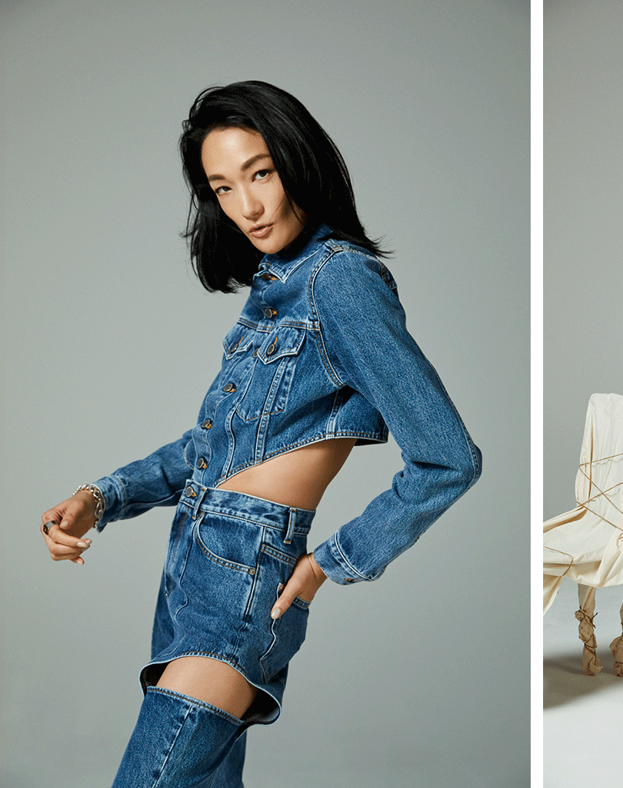

「モデルのお仕事ではもちろん、プライベートでも数えきれないほどのデニムを着てきました。今自宅にあるのは30点ぐらいかな。Y2Kと呼ばれている2000年代の再流行から、今はローライズが増えていたりと、不変的だけど常に新しさがありますよね」
「物心ついた頃からずっと着ていたけれど、好きになったのは中学生の頃から。初めて自分のお小遣いで街のデニムショップに足を運んでお気に入りの1本を見つけたのはいいけれど、裾丈が足りなくて。手芸屋さんで黒のフェイクレザー生地を買って、裾に足してリメイクしたんです。それがデニムにまつわる、印象深い思い出ですね。今でも、デニム×レザーの組み合わせは大好きです」
Composition & Text: Minori Okajima
2022.05.19
時代や性別、年齢を問わず愛され続けているデニム。冨永愛さんも長きに渡りさまざまなアイテムを身にまとってきたひとりです。モードなセットアップから、カジュアルなGジャン&パンツ、定番のスキニーパンツまで、数多く所有されている私服から3つのスタイルをシューティング。冨永さんにとって、デニムの魅力とは？ デニム愛にあふれるご本人の言葉とともにお届けします。

ウエストや太もものカットワークがポイントのセットアップ。「生地の色をモノトーンにしてモード感を出すのではなく、パターンワークで格好良く魅せているのが好き」
「デニムひとつとっても、サイズ感や色味、アイテム、本当にさまざまですよね。だから飽きることがないし、ずっと着続けられる。持っているのはやっぱり、パンツが多いです。シャツもニットも、無地から柄物まで、なんでも似合うから、コーディネートを選ばない。買うときに大切にしているのは、サイジングですね。着丈とウエスト周りのフィット感を、試着する際にチェックするようにしています」
「カジュアルなGジャン&パンツの組み合わせは、自分の定番スタイルのひとつ。足元のスニーカーはレザーを選んで、ボーイッシュになりすぎない絶妙なバランスで」
ベーシックな白シャツとスキニーデニムのコーディネートは、クロップド丈のシャツを着ることでモードな顔立ちに。「シルバージュエリーを腕回りにつけて、印象を変えるのもおすすめです」
「デニムは、10年前、20年前から持っているものが多いんですよ。きちんとケアすればずっと大切に穿き続けられるアイテムです。洗濯するタイミングは1ヶ月に1回程度。洗いすぎると生地が痛んだり、早く色落ちする原因にもなります。それに環境への負担も大きくなるから、最低限で十分なんです。海外から見ると日本は、洗濯の回数が多いと言われているんですって。一人のアクションは小さくても、みんなで心がけていけば、きっと素敵な未来が描けるはず」

「その点、LG Stylerは水だけでケアできるので環境にも優しく、お手入れも簡単でいいですね。家に届いてすぐにかけたのは、デニムでした(笑)。実際に使ってみて感じたことは、服のシワが取れて、パリッと感が出ること。クリーニングから戻ってきたばかりのような、とても綺麗な仕上がりに驚きでした」
「あと、服についたニオイも取れる！デニムのように毎日のように着るアイテムだけどケアが難しいものには、とてもいんじゃないでしょうか。実際に導入してみて、大きな汚れがなければLG Stylerを使おう、と思うことが多いです。これからやってみたいと思うのは、帽子やストールのような、コーディネートに欠かせない小物たち。気持ちのリフレッシュになるから、本当に取り入れてよかったなと思っています」
冨永愛
17歳でNYコレクションにてデビューし、一躍話題となる。以後、世界の第一線でトップモデルとして活躍。モデルの他、テレビ、ラジオ、イベントのパーソナリティ、女優など様々な分野にも精力的に挑戦。日本人として唯一無二のキャリアを持つスーパーモデルとして、チャリティ・社会貢献活動や日本の伝統文化を国内外に伝える活動など、その活躍の場をクリエイティブに広げている。公益財団法人ジョイセフ アンバサダー、エシカルライフスタイルSDGs アンバサダー（消費者庁）
Composition & Text: Minori Okajima